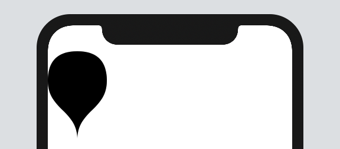

SwiftUI - Paths와 Shapes
SwiftUI - Paths와 Shapes
SwiftUI에서 도형을 그릴 일이 생겼는데 구글링 해보면 사람들마다 방법이 다양하다. SwiftUI에서는 크게 2가지 방식으로 도형을 그린다.
- Paths - 도형의 외곽선을 포함하는 구조체
- Shape - 단일 요구사항을 가진 프로토콜
Shape 역시 Core Graphics 안에서 path를 구현하는 방식으로 그리는데 그 차이를 알아본다.
Paths, Shape
paths는 위치값을 가진 선, 곡선 및 기타 정보를 가진 목록입니다. 하지만 Shape는 다른 정보를 미리 알 수 없다. Shape 내부에 path(in:) 메소드가 호출이 끝나야 최종적인 사이즈를 알 수 있다.
paths는 절대 경로 안에서 좌표값에 맞춰 도형을 그리지만 shape는 path(in:) 에서 주어진 Rect를 기반으로 상대 경로를 받아 그 안에 그리게 된다.
let balloon = Path { p in
p.move(to: CGPoint(x: 50, y: 0))
p.addQuadCurve(to: CGPoint(x: 0, y: 50),
control: CGPoint(x: 0, y: 0))
p.addCurve(to: CGPoint(x: 50, y: 150),
control1: CGPoint(x: 0, y: 100),
control2: CGPoint(x: 50, y: 100))
p.addCurve(to: CGPoint(x: 100, y: 50),
control1: CGPoint(x: 50, y: 100),
control2: CGPoint(x: 100, y: 100))
p.addQuadCurve(to: CGPoint(x: 50, y: 0),
control: CGPoint(x: 100, y: 0))
}
balloon.boundingRect // (0, 0, 100, 150)
...
struct ContentView: View {
var body: some View {
balloon
}
}

shape를 사용하면 훨씬 더 정교하게 제어할 수 있지만 크게 차이는 없어 보인다.
struct Balloon: Shape {
func path(in rect: CGRect) -> Path {
let bounds = balloon.boundingRect
let scaleX = rect.size.width/bounds.size.width
let scaleY = rect.size.height/bounds.size.height
return balloon.applying(CGAffineTransform(scaleX: scaleX, y: scaleY))
}
}

결론
Paths와 Shape는 거의 똑같다. 하지만 만약 상대 경로, 예를 들어서 Rect안에 자유 자제로 그리기를 원한다면 Shape를 사용해야 한다.